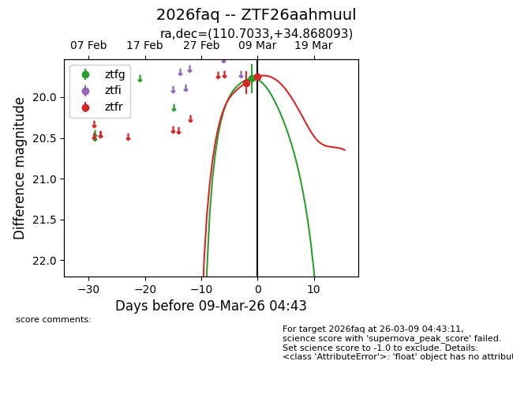
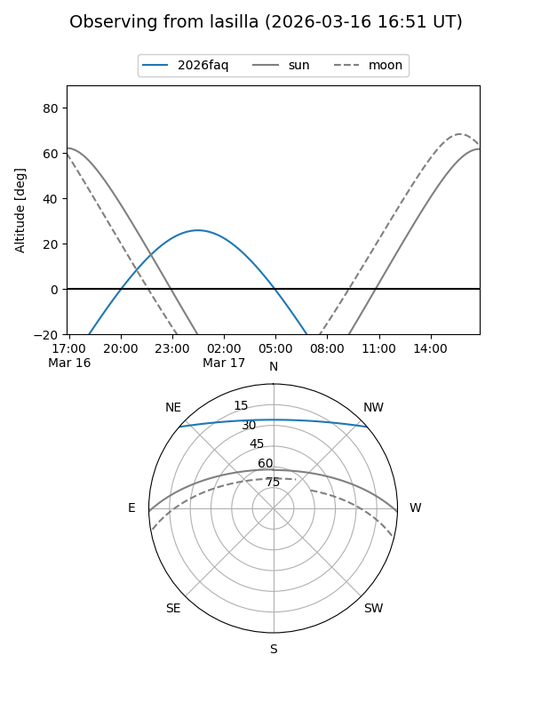
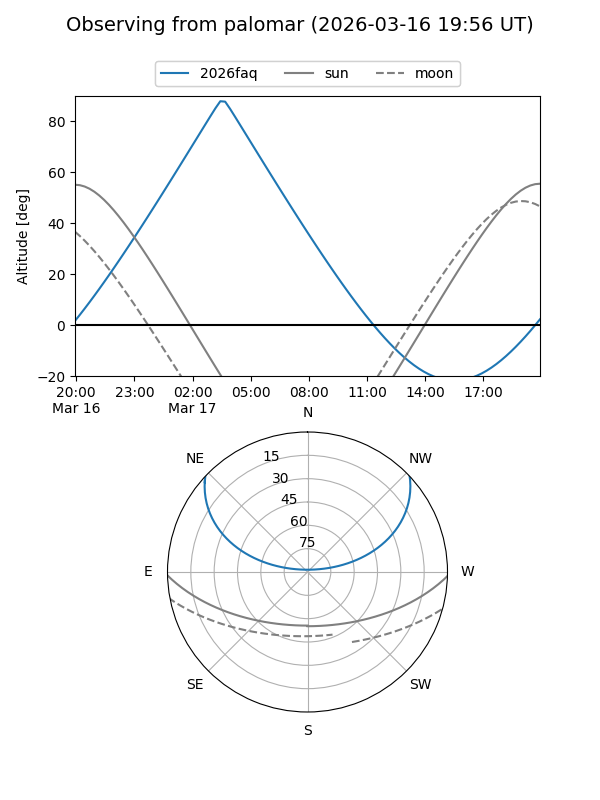

2026faq
Target 2026faq at 2026-03-09 04:44
Aliases and brokers:
FINK: link
Lasair: link
ALeRCE: link
TNS: link
YSE: link
alt names
ZTF26aahmuul (ztf,fink_ztf)
2026faq (tns,yse)
Coordinates:
equatorial (ra, dec) = 110.7033,+34.86809
equatorial (HMS+DMS) = 07:22:48.79,+34:52:05.13
galactic (l, b) = (183.5451,+21.12077)
Flags:
Photometry:
last ztfg=19.77, ztfr=19.75
1 ztfg, 2 ztfr detections
Lightcurve

Visibility


Additional plots